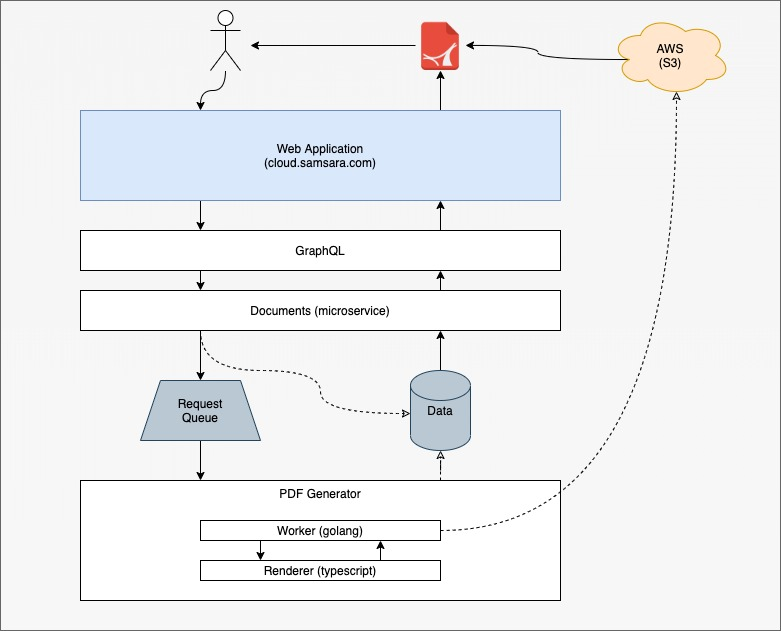

Hi 👋 ... I'm Abram!
(and that's Hailey)
Project Brief: PDF Export
Samsara Documents
Let's drivers submit forms on-the-go Often used for delivery receipts, fuel purchases, accident reports and more You use Samsara... Give it a try!The Problem
What do customers want?
Samsara Documents were designed for interactive environmentsCustomers want to share documents!
They also want to archive them
They started creating their own ways ... 🤔
Research
🎯 Goals
PDFs should be fully featured (photos, digital signatures, etc.)They should be visually appealing
They should be easy to consume (digital, physical, api)
Create a system that can be easily replicated on other teams
Non-Goals
Solve every team's PDF problems on the first passWhy is this problem hard?
Coders ≠ DesignersPDFs present unique layout challenges
Most FOSS solutions are very low level
We've tried before and failed 😢
Leadership was reluctant* see why is this problem hard
The Solution
First, the alternatives...
Let the customer solve the problem 🤦♂️Web->PDF Rendering
Low level libraries
The Customer Experience
A simple, delightful experience that customers appreciate.
The Developer Experience
A familiar technology stack (react, typescript, golang) Consistent operational footprint (deployment, monitoring) 2 other teams have already replicated the solutionDevelopers + Designers 😍
<Document>
<Page style={styles.body}>
<Text style={styles.header} fixed>
~ Ono Food Co. ~
</Text>
<Text style={styles.title}>We’re moving food forward.</Text>
<Text style={styles.author}>Stephen, Daniel, Derek, Lucy, Carter</Text>
<Image
style={styles.image}
src="https://onoblends.co/static/332088addd3d255889585906e7d2050d.png"
/>
<Text style={styles.pageNumber} render={({ pageNumber, totalPages }) => (
`${pageNumber} / ${totalPages}`
)} fixed />
</Page>
<Page style={styles.body}>
<Text style={styles.subtitle}>
We believe that good food brings out the best in you.
</Text>
<Text style={styles.text}>
By reimagining the mobile dining experience, we make healthy food accessible to everyone. We use organic fruits and vegetables to create delicious blends that focus on the best ingredients for you.
</Text>
<Text style={styles.text}>
We believe affordable nutrition should be accessible to everyone. With advanced robotics, thoughtful food sourcing, and nutritious ingredients we’re able to deliver this promise.
</Text>
<Text style={styles.pageNumber} render={({ pageNumber, totalPages }) => (
`${pageNumber} / ${totalPages}`
)} fixed />
</Page>
</Document>
vs. the alternative 🤢
func ExampleFpdf_SetLeftMargin() {
var y0 float64
var crrntCol int
pdf := gofpdf.New("P", "mm", "A4", "")
pdf.SetDisplayMode("fullpage", "TwoColumnLeft")
titleStr := "20000 Leagues Under the Seas"
pdf.SetTitle(titleStr, false)
pdf.SetAuthor("Jules Verne", false)
setCol := func(col int) {
// Set position at a given column
crrntCol = col
x := 10.0 + float64(col)*65.0
pdf.SetLeftMargin(x)
pdf.SetX(x)
}
chapterTitle := func(chapNum int, titleStr string) {
// Arial 12
pdf.SetFont("Arial", "", 12)
// Background color
pdf.SetFillColor(200, 220, 255)
// Title
pdf.CellFormat(0, 6, fmt.Sprintf("Chapter %d : %s", chapNum, titleStr),
"", 1, "L", true, 0, "")
// Line break
pdf.Ln(4)
y0 = pdf.GetY()
}
chapterBody := func(fileStr string) {
// Read text file
txtStr, err := ioutil.ReadFile(fileStr)
if err != nil {
pdf.SetError(err)
}
// Font
pdf.SetFont("Times", "", 12)
// Output text in a 6 cm width column
pdf.MultiCell(60, 5, string(txtStr), "", "", false)
pdf.Ln(-1)
// Mention
pdf.SetFont("", "I", 0)
pdf.Cell(0, 5, "(end of excerpt)")
// Go back to first column
setCol(0)
}
printChapter := func(num int, titleStr, fileStr string) {
// Add chapter
pdf.AddPage()
chapterTitle(num, titleStr)
chapterBody(fileStr)
}
pdf.SetAcceptPageBreakFunc(func() bool {
// Method accepting or not automatic page break
if crrntCol < 2 {
// Go to next column
setCol(crrntCol + 1)
// Set ordinate to top
pdf.SetY(y0)
// Keep on page
return false
}
// Go back to first column
setCol(0)
// Page break
return true
})
pdf.SetHeaderFunc(func() {
// Arial bold 15
pdf.SetFont("Arial", "B", 15)
// Calculate width of title and position
wd := pdf.GetStringWidth(titleStr) + 6
pdf.SetX((210 - wd) / 2)
// Colors of frame, background and text
pdf.SetDrawColor(0, 80, 180)
pdf.SetFillColor(230, 230, 0)
pdf.SetTextColor(220, 50, 50)
// Thickness of frame (1 mm)
pdf.SetLineWidth(1)
// Title
pdf.CellFormat(wd, 9, titleStr, "1", 1, "C", true, 0, "")
// Line break
pdf.Ln(10)
// Save ordinate
y0 = pdf.GetY()
})
pdf.SetFooterFunc(func() {
// Position at 1.5 cm from bottom
pdf.SetY(-15)
// Arial italic 8
pdf.SetFont("Arial", "I", 8)
// Text color in gray
pdf.SetTextColor(128, 128, 128)
// Page number
pdf.CellFormat(0, 10, fmt.Sprintf("Page %d", pdf.PageNo()),
"", 0, "C", false, 0, "")
})
printChapter(1, "A RUNAWAY REEF", example.TextFile("20k_c1.txt"))
printChapter(2, "THE PROS AND CONS", example.TextFile("20k_c2.txt"))
fileStr := example.Filename("Fpdf_SetLeftMargin_multicolumn")
err := pdf.OutputFileAndClose(fileStr)
example.Summary(err, fileStr)
// Output:
// Successfully generated pdf/Fpdf_SetLeftMargin_multicolumn.pdf
}
Execution
Timeline
Final Architecture
Shout Outs 🥳
Shaun Houlihan - Team LeadNoah Ray - React Specialist